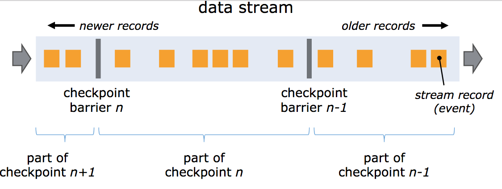
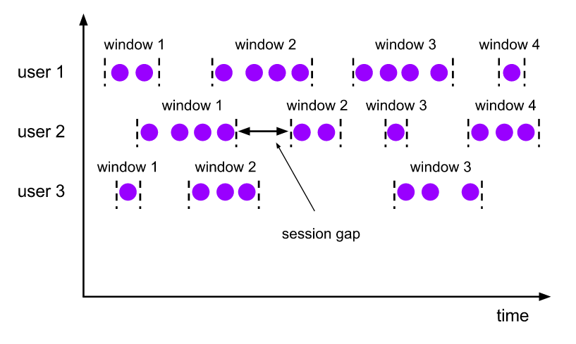
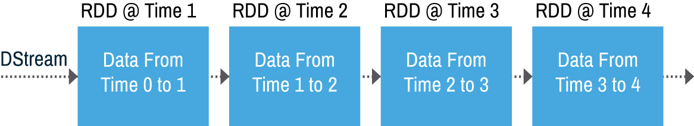
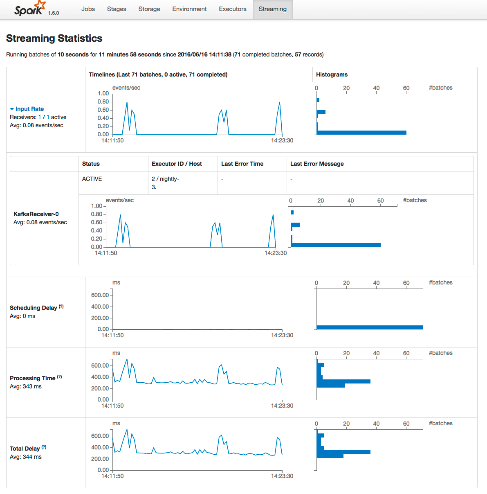

Flink vs Spark
Publicado em:
@mikedias
@gmcoringa
O título do post é polêmico para chamar sua atenção, mas a ideia deste post é mostrar a nossa visão sobre essas duas excelentes ferramentas: Apache Flink e Apache Spark. Nós não entraremos em detalhes profundos de cada ferramenta, nem faremos qualquer tipo de benchmark. Nós vamos apenas apontar as características que são relevantes para o nosso dia a dia. Se você não conhece o Flink ou o Spark, na homepage dos projetos há uma introdução bacana sobre cada um deles.
Flink
O Flink é um projeto que nasceu com a mentalidade streaming-first, isto é, o objetivo principal da plataforma é processar dados que são produzidos de maneira contínua e infinita:

Essa arquitetura permite que o job que processa o stream seja mais rápido e resiliente. Mais rápido porque os eventos são processados assim que eles chegam e mais resiliente porque os eventuais picos de eventos (também conhecidos como back pressure) são gerenciados de maneira automática pelo Flink.
No Flink, os streams podem ser tratados como finitos ou infinitos. Com isso é possível emular um stream usando o backup dos dados do Apache Kafka e reprocessar o histórico usando exatamente o mesmo código implementado sobre a API de streams. Isso nos dá o poder de olhar para o passado sempre que for necessário sem nenhum esforço adicional.
As windows são uma maneira dividir um stream contínuo em pequenos agrupamentos para efetuar algum processamento. Este conceito é relativamente comum em sistemas de processamento contínuo, porém o Flink possui um tipo especial de window que é muito útil em cenários do dia a dia chamado Session Window. Com ela é possível agrupar eventos subsequentes cujo o intervalo de tempo entre eles não exceda um determinado valor, criando uma espécie de sessão do usuário:

A garantia exactly-once na computação de estado do Flink nos dá a segurança de que os resultados dos streams estarão corretos, mesmo em cenários de falha. Como esse estado é persistido utilizando o mecanismo de savepoints, é possível fazer o deploy de novas versões do stream sem perder o estado atual computado.
O ponto fraco do Flink é a sua comunidade, que ainda é pequena. Isso faz com que o ecossistema não seja tão rico, o que leva à falta de integrações para outras ferramentas. Por exemplo, para conseguirmos utilizar o Flink na nossa pipeline, nós mesmos adicionamos o suporte para o Elasticsearch 5.x.
Spark
Já o Spark possui uma mentalidade batch-first. Isso acontece porque o projeto foi criado com o propósito de ser mais rápido e eficiente do que o MapReduce, principal técnica de processamento na época. Influenciado por essa mentalidade, o Spark Streaming foi criado para resolver o problema de fluxos contínuos utilizando microbatches, aproveitando a implementação fundamental de batches do Spark (os famosos RDDs): 
Para nós isso não faz muita diferença, afinal, os dados serão processados de maneira semelhante a um stream mesmo com um pouco mais de latência. O problema desta implementação é que o tamanho da window e o tamanho do microbatch precisam estar muito bem configurados para conseguir sobreviver a um volume de eventos maior do que o esperado. Uma dessas configurações é a spark.streaming.backpressure.enabled=true que faz com que o Spark analise os tempos de processamentos de micro-batches anteriores para se adaptar a flutuações em micro-batches subsequentes.
Falando em configuração, o Spark possui diversas, inclusive algumas não documentadas. Isso pode ser uma vantagem ou uma desvantagem: é possível otimizar o Spark para se encaixar com suas necessidades mas, ao mesmo tempo, exigirá mais esforço para dominar tais configurações.
Um dos pontos positivos no Spark é a diversidade de métricas e uma interface web que mostra muitas informações sobre o estado de um job, como tempos de processamento, utilização (ou uso) de memória e disco:

A partir da versão 2.x do Spark, é possível fazer o deploy de atualizações do stream sem perder o estado atual computado. Nas versões anteriores, todo o código era serializado juntamente com os estados salvos no checkpoint, não sendo possível reutilizar o mesmo. Dependendo da sua fonte de dados, será necessário código adicional para lidar com este problema.
Uma das grandes inovações da versão 2.x do Spark foi o Structured Streaming, o qual utiliza a mesma API tanto para batch quanto para streams. Porém esta não é a única vantagem desta nova API, que conta com garantias exactly-once, além de diversas otimizações.
Por fim, um dos principais diferenciais do Spark é a sua comunidade: desde 2009, mais de 1000 desenvolvedores já contribuíram ao projeto! Essa comunidade faz com que o ecossistema em torno do Spark seja muito rico, especialmente no que se refere a machine learning e processamento em batch.
Conclusão
Ambas as ferramentas tem seus pontos positivos e negativos. Aqui no Elo7 nós usamos o Flink na nossa pipeline analítica mas também utilizamos Spark em alguns projetos internos com a ajuda do Nightfall.